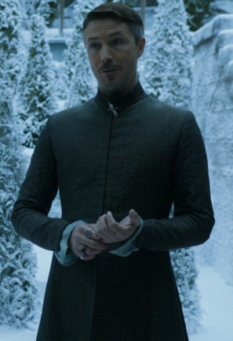

| Nom | Image | Biographie |
|---|---|---|
| Lysa Arryn |
Interprète Kate Dickie Saison(s) 1, 4 Titre(s) Lady Régente du Val Alias Lysa Tully Statut Décédée Mort Poussée par la Porte de la Lune par Petyr Baelish Origine Vivesaigues Allégeance Maison Baelish Maison Arryn Maison Tully Culture Andals Religion Foi des Sept Relation Jon Arryn - premier mari † Petyr Baelish - second mari † Parents Hoster Tully - père † Minisa Tully - mère † Enfant(s) Robin Arryn - fils Fratrie Catelyn Stark - sœur † Edmure Tully - frère | |
| Robin Arryn |
Interprète Lino Facioli Saison(s) 1, 4, 5, 6 Titre(s) Seigneur des Eyrié Gouverneur de l'Est Seigneur Suzerain du Val Alias Robin Statut Vivant Origine Les Eyrié Allégeance Maison Arryn Culture Andals Relation Eddard Stark - mari † Parents Jon Arryn - père † Lysa Arryn - mère † | |
| Petyr Baelish |  |
Interprète Aidan Gillen Saison(s) 1, 2, 3, 4, 5, 6, 7 Titre(s) Grand Argentier (autrefois) Lord Protecteur du Val Seigneur d'Harrenhal Alias Littlefinger Statut Décédé Mort Exécuté par Arya Stark sous ordre de Sansa Stark Origine Les Doigts Allégeance Maison Baelish Relation Lysa Arryn - femme † |